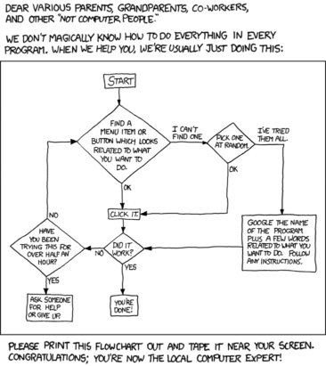

In this module we will talk about how you can continue learning, gaining confidence, and expanding what you can do in R using contributed packages (also called libraries).
Whether you are an expert or a novice, you will always encounter situations where you don’t know exactly what to do. The great thing about R is that there is nearly always a way to do it (whether in base R or via packages contributed by R users from around the world), and once you get familiar with the basics, it’s usually not that hard to figure out how to accomplish your analysis objectives!
Click here to download the script! Save the script to a convenient folder on your laptop.
Load your script in RStudio. To do this, open RStudio and click on the folder icon in the toolbar at the top and load your script.
How is it possible to have so many features implemented in a single programming environment?
The answer is that you have a whole community of researchers adding new functionality all the time! This new functionality is implemented in the form of R Packages, also known as libraries. Each package includes a set (library) of functions for accomplishing specific tasks (and associated help files!).
For a simple example (borrowed from Prelude in R), base R does not include a function for computing the mode of a vector. BUT, some R user decided that functionality would be useful! They coded up a function for computing the mode, and then they documented it and wrapped it up into a package, called “modeest”, and made the package available in the CRAN repository.
Packages in the CRAN repository can be installed using the function “install.packages()”:
##############
# PACKAGES!
##############
install.packages("modeest") # run this if you haven't yet installed the package from CRAN!library(modeest) # load the package: This is package 'modeest' written by P. PONCET.
# install.packages("BiocManager")
# BiocManager::install("genefilter") # you might need to install a dependency in order to make this work!Now that we have installed and loaded the package in our current R session, we can learn more about it! One quick way to get a quick overview of the package is to use the following syntax:
library(help = "modeest") # get overview of packageCan you use the package overview to identify a function for computing the mode of a data vector?
Let’s try to use it! If you haven’t already loaded the “data.missing.txt” dataset, download it here and save to your working directory.
newdf <- read.table(file="data_missing.txt", sep="\t", header=T)
?mlv # learn more about the function for computing the mode. Who knew there were so many methods for computing the mode?## starting httpd help server ... done # lets find the most frequent value(s) in the "Export" column:
mlv(newdf$Export, method="mfv", na.rm = T) ## [1] 0Not that you need to do this very often, but if you want to remove a package from your current session, you can use the “detach()” function:
detach("package:modeest") # remove the package from the workspaceBefore we move on, the “car” package (_c_ompanion to _a_pplied _r_egression) gives us an example of the endless, amazing things we can do with R packages. Here we will make our own interactive 3d plot! (example from “prelude in R”).
Here is a data set that represents the number of times a dog barks in a day, and two potential explanatory factors: food given (in lbs) and cars passing by the house.
#########
# 3D Plotting example
#########
#########
# Data: dog barks per day (and two explanatory variables)
Cars= c(32, 28, 9, 41, 23, 26, 26, 31, 12, 25, 32, 13, 19, 19, 38,
36, 43, 26, 21, 15, 17, 12, 7, 41, 38, 33, 31, 9, 40, 21)
Food= c(0.328, 0.213, 0.344, 0.339, 0.440, 0.335, 0.167, 0.440, 0.328,
0.100, 0.381, 0.175, 0.238, 0.360, 0.146, 0.430, 0.446, 0.345,
0.199, 0.301, 0.417, 0.409, 0.142, 0.301, 0.305, 0.230, 0.118,
0.272, 0.098, 0.415)
Bark=c(15, 14, 6, 12, 8, 1, 9, 8, 1, 12, 14, 9, 8, 1, 19, 8, 13, 9,
15, 11, 8, 7, 8, 16, 15, 10, 15, 4, 17, 0)Let’s install and load the “car” package:
install.packages("car")
install.packages("rgl") # you need this one as well!
library(car)Now for the fun part- interactive 3-D graphics! Run the following code and take a minute to play around with the resulting scatterplot.
##########
# interactive 3-D graphics!
car::scatter3d(Bark~Food+Cars,surface=TRUE)More and more package developers are bypassing the CRAN repository, and instead using GitHub. In some cases, the version available on CRAN is not the latest version- for the latest version, you need to use GitHub. Also, many packages that are in development are only found on GitHub. There are actually some good reasons to put an R package on GitHub:
The syntax for using “install_github()” is just install_github(“[author]/[package]”) Here’s an example using the “install_github()” function:
###########
# install package from GitHub:
# install.packages("devtools") # run this if you haven't already installed the "devtools" package
library(devtools)
install_github("kbroman/broman") # install a random package from GitHub!Usually a Google search is the best way to find packages for doing something you want to do! But you may also read about new packages in a journal (e.g., Methods in Ecology and Evolution) or textbook, or conference, or just talking with other researchers!
It’s not always perfectly obvious how to get started in actually using a new package. Here are three tips.
We’ve already seen this one- just use the following syntax to pull up an overview of any package:
library(help = "[package name]")
For example,
###########
# Learning more about packages
###########
###########
# Package overview
library(help = "car") # help file for the useful "car" package for applied regression“Vignettes” are provided in many packages, and are tremendously useful, providing worked examples. Usually the package overview (above) will tell you which vignettes are available (see above). Use the following syntax to pull up a vignette:
vignette('[name of vignette]', '[name of package]')
For example,
##########
# package vignette
browseVignettes('car')
vignette('embedding','car') # pull up the "embedding" vignette in the 'car' packageOr let’s take a look at the “dismo” package, which is for species distribution modeling in R:
################
#### GENERAL TIPS
################
#############
# 1. Use code examples provided by others
install.packages("dismo") # install "dismo" for species distribution modeling
browseVignettes('dismo')
vignette('sdm','dismo') # pull up one of the helpful vignettes from the 'dismo' package, with useful code examples! Many packages have built-in vignettes.
vignette('brt','dismo') # and another one!Some packages include “demos”, which are a bit more interactive than the built-in examples. Here’s an example:
########
# package demo
demo(package="stats") # list all demos for package 'stats', which is included in base R
demo('nlm','stats')The ‘master’ documentation for any package is often packaged as a PDF file that can be downloaded from CRAN (each package on the CRAN repository has its own webpage- for example, here’s the one for the raster package)
Also, you can load the documentation for any package you have installed using the “help.start()” function:
###########
# Load html documentation for R and all installed packages
help.start()To me, there is no better way to learn (1) general coding, (2) best practices for statistical analyes, and (3) how to take advantage of specialized functions in packages than to try to work through and understand code examples that others have written.
One way to do this- for base R and for packages, is to access the examples provided in the package documentation. These examples are provided at the end of the help file for any function (using ‘help()’ or ‘?’). You can also run these examples using the “example()” function. For example:
#########
# Built-in examples
example(lm) # run examples for "lm" function (included in base R)Unfortunately, the code examples provided in help files (e.g., when using the leading question mark to pull up a help document) are often surprisingly unhelpful. Instead, you can try the package vignettes, or just use your favorite search engine to find more helpful examples on the web!
Most packages include one or more citations, which are often peer-reviewed papers that document the novel algorithms included in the package, often in more detail than the help files. These are also the papers you should cite if you use the package for a manuscript. You can find these citations using the “citation()” function:
########
# package citations
citation('car') # citation for the 'car' package##
## To cite the car package in publications use:
##
## John Fox and Sanford Weisberg (2019). An {R} Companion to
## Applied Regression, Third Edition. Thousand Oaks CA: Sage. URL:
## https://socialsciences.mcmaster.ca/jfox/Books/Companion/
##
## A BibTeX entry for LaTeX users is
##
## @Book{,
## title = {An {R} Companion to Applied Regression},
## edition = {Third},
## author = {John Fox and Sanford Weisberg},
## year = {2019},
## publisher = {Sage},
## address = {Thousand Oaks {CA}},
## url = {https://socialsciences.mcmaster.ca/jfox/Books/Companion/},
## }citation() # and here's the citation for R in general- useful for when you use R for manuscripts##
## To cite R in publications use:
##
## R Core Team (2019). R: A language and environment for
## statistical computing. R Foundation for Statistical Computing,
## Vienna, Austria. URL https://www.R-project.org/.
##
## A BibTeX entry for LaTeX users is
##
## @Manual{,
## title = {R: A Language and Environment for Statistical Computing},
## author = {{R Core Team}},
## organization = {R Foundation for Statistical Computing},
## address = {Vienna, Austria},
## year = {2019},
## url = {https://www.R-project.org/},
## }
##
## We have invested a lot of time and effort in creating R, please
## cite it when using it for data analysis. See also
## 'citation("pkgname")' for citing R packages.In some cases you may run into issues with a particular package that you just can’t seem to solve. It’s still likely that others have had this problem! If you use some appropriate keywords in a google search you may find a link to an online forum (like stackoverflow) where someone has answered a similar question. It’s amazing how many knowledgeable people are answering questions on these forums - they are a tremendously valuable resource!
And of couse, if you still can’t find an answer to your question, you can ask your question on one of these online forums. The best ones are probably Nabble, Stack Overflow, and Cross Validated.
There are lots of “cheat sheets” available for reminding you of basic R functionality. It can be useful to tape these to the wall next to your desk!
For example, here is a good cheat sheet for using base R.
see Links page for more resources, including cheat sheets!
I don’t even understand why it works so well to google R help (‘r’ is just a single letter after all, how does a single letter help a search?), but it works pretty well!! With some basic programming knowledge, basic R know-how including how R packages work (and some cheat sheets by your desk), and the internet, you can pretty much always find a solution!
More helpful links for going further with R are provided on the Links page.
